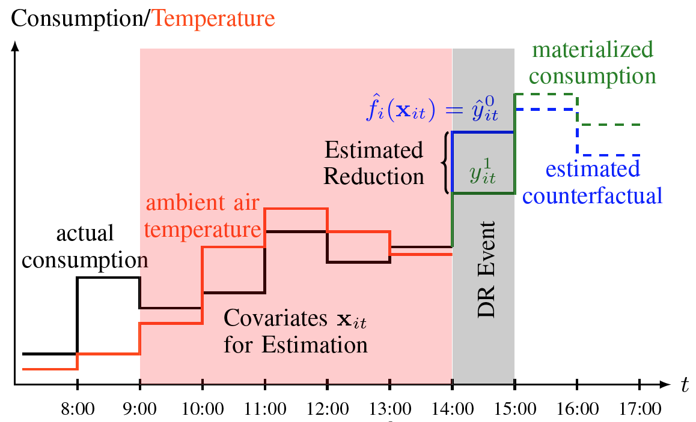

|
Research Projects
Budget Constrained, Combinatorial Multi-Armed Bandits
|
|
We consider the classical multi-armed bandit setting, where a player is given a choice of N distinct arms and must decide which arm to play over a period of many consecutive trials. The objective of the player is to maximize her payoff after termination of the game, or equivalent, to minimize regret, which is the difference between the actual observed payout and the best action in hindsight. This illustrates the classical exploration-exploitation tradeoff, where the player must balance between playing “good” arms that she believes to have a large payout (exploitation) and the need to explore new arms that could yield an even larger payout (exploration).
In this project, we introduce a budget constrained, combinatorial version of this problem. Specifically, the player is given a fixed budget B before the first round and has to play exactly K arms at each trial (where 1 <= K <= N). Each arm is now associated with a time-varying cost in addition to a time-varying reward. At each round, the player observes the costs and rewards only for the arms played (semi-bandit feedback). The game ends when the cumulative cost exceeds B. The idea to introduce a cost is justified by many applications of Multi-Armed Bandits (e.g. sequential treatment allocation, online advertising, shortest path routing), which typically come with a cost. This, surprisingly has not been considered to a satisfactory extent in the extant literature. We aim to contribute to this field, considering both the stochastic and adversarial setting. In the stochastic setting, we assume that costs and rewards are independently and identically distributed across different rounds according to some distribution with finite support. In the adversarial setting, we make no such statistical assumptions, allowing for an arbitrary choice of cost and reward sequences fixed a-priori.
|
Estimation of Treatment Effects of a Residential Demand Response (DR) Program
|
|
Residential Demand Response has emerged as an instrument of the modern smart grid to alleviate supply and
demand imbalances of electricity. Utilizing their flexibility of electricity demand, residential households are offered monetary
incentives to temporarily reduce energy consumption during times when the grid is strained due to a supply shortage.
The goal of this project is to model the behavior of consumers in response to such monetary incentives. Using hourly smart meter data, we train statistical models on previous consumption histories and ambient air temperature to estimate the reductions of electricity consumption during Demand Response periods. Importantly, the counterfactual consumption during Demand Response periods, which is the hypothetical consumption had there been no intervention, is challenging to predict due to inherent noisiness of smart meter data and users consuming electricity in a non-utility-maximizing fashion.
|
|
 |
An important aspect of this project is to compare non-experimental estimates, that is, estimates that solely rely on observational data, to estimates obtained from a Randomized Controlled Trial (the experimental gold standard). Given that experiments are often expensive or unethical to conduct, and with ever-growing amounts of available and easily accessible user-level data, we seek to answer whether or not our non-experimental estimates are close to those obtained by a Randomized Controlled Trial in California on ~5,000 residential households.
Finally, the advantage of our non-experimental approach permits the estimation of Individual Treatment Effects, and as such, the detection of considerable heterogeneity among users. From a profit-maximization and/or allocative efficiency perspective, we analyze the efficiency of an adaptive targeting scheme, which differentiates users based on previous responses to adjust future interventions so as to maximize the aggregate reduction across all users, while taking into account budget constraints of the Demand Response Provider.
|
Residential Demand Response Targeting Using Observational Data. 55th IEEE Conference on Decision and Control, 2016.
A Bayesian Perspective on Residential Demand Response Using Smart Meter Data. Allerton Conference on Communication, Control, and Computing, 2016.
Estimating Treatment Effects of a Residential Demand Response Program Using Non-Experimental Data. 2017 International Conference on Data Mining Workshops (ICDM).
Estimating Heterogeneous Treatment Effects in Residential Demand Response. In preparation.
Information Asymmetries between Consumers and Producers in Electricity Markets
|
|
Network effects in social networks and platforms often exhibit positive externalities, capturing the intuitive fact that an increased amount of platform activity promotes a local increase in platform activity. Previous academic work by psychologists, political scientists, and behavioral economists has found that social comparisons can have a significant impact on people’s behavior, exploiting the willingness of individuals to conform to a standard, receive social acclaim, or simply the belief that other people's choices are informative in the presence of limited of imperfect information. In this project, we investigate the impact of peer effects on energy consumption of residential households, motivated by Home Energy Reports which compare a particular household's usage to its neighbors. We set up a two-stage game-theoretic model for the energy consumption of a network of users, serviced by a load-serving entity that is obligated to cover the demand at all times. We solve for the equilibria of this game under full information of the network structure and users’ parameters to characterize the influence of peer effects on aggregate consumption and utility profit, for both the case of perfect price discrimination and a single price valid for all users.
|
Furthermore, in Residential Demand Response (DR), a DR provider (DRP) offers monetary incentives to users to elicit reductions, which are offered in the wholesale electricity market. To make an informed capacity bid into the market, the DRP must take various factors into account, such as the expected Locational Marginal Price which determines its market clearing price, the elasticity of users’ demand given an incentive, and the number of users under contract. If the DRP bids too much capacity, the aggregate reduction among its user base fails to reach the capacity volume, incurring a shortfall penalty; similarly, a suboptimal revenue arises from too small a bid. The DRP can improve its bidding strategy by learning users’ behavior in response to
incentives. However, users’ preferences are typically private information and hence unknown to the utility. The challenge thus becomes to elicit this private information. We cast this problem as a mechanism design problem, where the DRP as the auctioneer solicits bids from each of its residential customers through an incentive compatible and individually rational mechanism. The motivation behind this approach is to increase allocative efficiency, that is, the utility would like to solicit reductions only from the highest reducers, who are most willing to reduce their consumption in exchange
for the lowest possible reward. In this paper, we design such a mechanism that fulfills these criteria and benchmark its performance against the omniscient case, where user characteristics are common knowledge.
Eliciting Private User Information for Demand Response. Accepted to IEEE Conference on Decision and Control (CDC), 2017.
How Peer Effects Influence Energy Consumption. Accepted to IEEE Conference on Decision and Control (CDC), 2017.
Real-Time Pricing and Risk Sharing in Electricity Markets
|
|
Electricity is sold at quasi-fixed tariffs to residential households, which precludes economic efficiency by its very nature. Economists have long argued in favor of real-time pricing, yet policymakers hesitate to incorporate it due to several reasons. One such reason is the increased volatility of electricity prices and demand, since relaying the real-time price to end-users would create a feedback system between the households, electric utilities, and the Independent System Operator. In this project, we derive a dynamic user model for electricity demand motivated by the inventory problem. Users can backlog their demand at a disutility if they expect future electricity prices to be lower than at the current time step. A feedback loop between end-users and the electric utility emerges, whose stability we analyze.
More generally, quantity and price risks in electricity markets are traditionally borne by load serving entities. These entities procure electricity both from generators, either indirectly through the day-ahead / hour-ahead market, or directly through bilateral contracts. Such contracts allow generators and load serving entities to hedge against price and quantity risks, which exist due to the variability of demand, the slowness of power plants’ output adjustment, and the prohibitively costly nature of energy storage.
|
Incorporing end-users of electricity (Demand Side Management) is a relatively new idea, intending to include a third party into the risk-sharing process. Using Locational Marginal Prices from California and smart meter data from residential households, we approximate the demand distribution of end-users to propose profit-maximizing hedging contracts between load-serving entities, generators, and end-users of electricity.
Hedging Strategies in Wholesale Electricity Markets. Accepted to IEEE Conference on Decision and Control (CDC), 2017.
Stability Analysis of Wholesale Electricity Markets under Dynamic Consumption Models and Real-Time Pricing. American Control Conference (ACC), 2017.
Building Automation and System Identification
|
|
Commercial buildings are responsible for up to 40% of the total energy consumption in developed countries, and therefore are targets for energy efficiency and ancillary services programs to provide frequency regulation and support the stability of the electric grid. In particular, buildings have a large thermal capacity, allowing building managers to flexibly schedule HVAC operation (and therefore power consumption) without compromising building occupants’ comfort.
A fundamental requirement for participating in ancillary services is a temperature model that allows to predict future temperatures as a function of the airflow of Variable Air Volumes (VAV) as part of the building's HVAC system. A notable challenge in identifying such a model lies in the fact that buildings are often insufficiently excited, that is, the temperature of the building often varies in a small range only in order to ensure building occupants’ comfort. Furthermore, it is not intuitive how to model unknown internal gains due to building occupants and electric devices. These have to be identified as part of the temperature model.
|
In this project, we identify a state-space model for the 4th floor of Sutardja Dai Hall (see picture) using data collected during real-time operation of this building. Specifically, we identify a low-dimensional state-space model as well as a high-dimensional, physics-based model. As expected, the physics-based model is more accurate, which, however, comes at the expense of a larger computational cost. Simulations with Model Predictive Control show that the difference in accuracy between both models is negligible for most control applications of the building, in particular regular operation.
Quantitative Comparison of Data-Driven and Physics-Based Models for Commercial Building HVAC Systems. American Control Conference (ACC), 2017.
Building Model Identification during Regular Operation - Empirical Results and Challenges. American Control Conference (ACC), 2016.
Experimental Demonstration of Frequency Regulation from HVAC Systems of Commercial Buildings. In preparation.
|